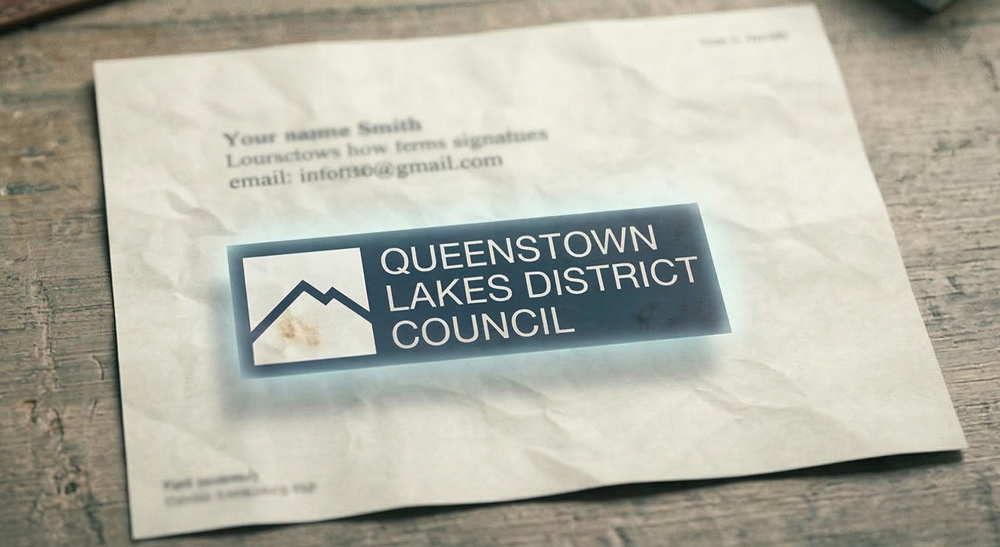

A Logo That Shouldn't Be There
An analysis of NZMC Case 3356 — and what the two possible explanations reveal
When a news outlet publishes a document as evidence for a serious allegation about a named individual, the accuracy of that document is not a secondary concern. It is the claim. If the document has been altered — even in a small detail — the entire foundation of the story is compromised.
This is an analysis of one such document, a ruling by the New Zealand Media Council that left a critical question unresolved, and the lasting consequences of journalism that is deleted rather than corrected.
The Article and the Email
In August 2022, Crux News published an article making serious allegations about a named Queenstown professional. The article centred on an email written by that person. As published by Crux, the email showed a QLDC logo appearing beneath the writer's typed signature.
That logo matters. The article alleged that the complainant had written their own consulting contract while connected to QLDC. The email was the evidence for that allegation. A QLDC logo appearing beneath the complainant's own typed signature on that email reinforced the impression that they were writing in an official institutional capacity — that this was not a private individual's offer of service, but something conducted under the QLDC banner. It made the central allegation look more credible than the document, correctly read, could support.
The subject of the article disputed it. The logo, they said, was not in their email.
Three Versions, One Discrepancy
The New Zealand Media Council investigated. What it found is recorded in paragraph [18] of its ruling:
"The Media Council has more difficulty regarding the presence of the QLDC logo under [the complainant]'s typed email signature. [The complainant] has provided the council with a copy of his own version of this email (sourced from his Gmail account). The information provided by the QLDC (and available to the Media Council) under the Local Government Official Information and Meetings Act 1987 (LGOIMA) also contains a version of the email. Neither of these contain the logo at the bottom of the email. Crux provided a pdf. correspondence file that appears to include a version of the email used in the article (ie, including the logo) and which it says comes from the LGOIMA request. There is no explanation as to how the version Crux states comes from the LGOIMA request is different from that the Media Council was able to download."
Three versions of the same email were before the Council.
Version one: the complainant's own copy, retrieved from their Gmail account. No logo.
Version two: the LGOIMA release, accessed independently by the Media Council itself. No logo.
Version three: the PDF provided by Crux, which Crux said came from that same LGOIMA release. Logo present.
The Council noted there was "no explanation" for how Crux's version differed from the version the Council itself had downloaded from the identical source. It then declined to make a finding, stating only that it had "more difficulty" with this issue.
That non-finding deserves scrutiny. Because there are only two possible explanations for what the Council documented — and working through them carefully leads somewhere significant.
The Only Two Explanations
Either Crux's version of the email contains something that was not in the source document it received — or QLDC provided Crux with a different version of the document than it later released under LGOIMA.
There is no third option.
Could QLDC Have Altered the Document?
This possibility deserves to be taken seriously, not dismissed. If a local government body provided one version of an official document to a journalist and later released a different version through official channels, that would constitute falsification of public records. It would be a serious matter of public interest — precisely the kind of story an investigative outlet exists to expose.
But this explanation collapses the moment you apply it.
First, Crux never alleged it. Peter Newport's response to the complaint was that Crux did not alter the email — not that QLDC had given him a different version. If Newport had received a logo-bearing document from QLDC that later disappeared from the official record, that gap would have been his primary defence. It was not raised.
Second, Crux never reported it. Crux is an outlet that has devoted significant resources to investigating QLDC misconduct — council decisions, contract cronyism, cover-ups. If Newport had in his possession evidence that QLDC had falsified an official document released under LGOIMA, the failure to publish that story would represent a complete abandonment of the editorial mission Crux's supporters most value. No such story was published.
Third, the two independent versions match each other. The complainant's Gmail copy and the Council's own download are consistent. These came from entirely separate sources — the subject of the story and the adjudicating body. They agree. The only version that differs is the one Crux produced.
The QLDC-alteration explanation requires believing that a local government body committed document fraud, that Crux noticed the discrepancy and chose not to report it, and that this went unmentioned in Newport's own defence to the complaint. Every step of that chain fails.
What Remains
When the only alternative explanation is eliminated, what remains is this: the version of the email published by Crux contained a QLDC logo that was not present in the source document.
The Council had the evidence to establish this. It had the complainant's copy. It had its own independent download. It noted the discrepancy in writing. It recorded that Crux offered no explanation.
It then made no finding.
That is a significant decision. Document integrity is not a procedural technicality in journalism. It is foundational. When a news outlet publishes a document as evidence for a serious allegation about a named individual, the accuracy of that document is not a secondary concern. It is the claim.
The complainant was not contacted for comment before the article was published — a separate breach the Council did find. They had no opportunity to point out the discrepancy before it reached thousands of readers. By the time the complaint was resolved, the article had done its work.
Deletion Is Not Correction
The article has since been deleted.
Under New Zealand Media Council Principle 12, this is not sufficient. The Principle is unambiguous: significant errors should be promptly corrected with fair prominence. Deletion without acknowledgment of error, without correction notice, and without apology to the affected person is not compliance with Principle 12. It is the avoidance of it.
Silent deletion serves the publisher, not the public, and certainly not the person about whom the article was written. Readers who saw the original article have no way of knowing it was wrong. The impression created by an inaccurate document published under a damaging headline does not disappear when the URL does.
The Harm That Persists
A search of the complainant's name today returns the NZMC ruling, Crux's correction notice, and further Crux reporting — permanently indexed, never adequately corrected. Deletion did not remedy the harm. It preserved it.
This is the practical consequence of failing to correct with fair prominence. The permanent public record now consists of the allegation, the ruling against Crux, and nothing that clearly and prominently tells the reader what was wrong and why. The document with the unexplained logo is gone. The damage it caused is not.
The Broader Point
The Media Council's ruling upheld multiple breaches beyond the logo: the headline was inaccurate, the framing misrepresented what the email actually showed, the description of the email's recipient was accepted as wrong, and the failure to seek comment from the subject was a clear balance failure. These findings are on the record.
The logo issue sits alongside them, unresolved — not because the evidence was unclear, but because the Council declined to follow it to its conclusion.
That is not the end of the analysis. It is the beginning of a question that remains open: if a published document contains something that was not in any independently verifiable source version, and no explanation has ever been offered, what does that tell us about the standards being applied to the journalism?
The New Zealand Media Council has found that Crux's continued failures bring into question its ability to meet and maintain the required high standards.
This case is part of that record. It belongs in the public domain.
This analysis draws directly on the New Zealand Media Council ruling in this matter, including the text of paragraph [18], and on Principle 12 of the NZMC Statement of Principles. Both are publicly available at mediacouncil.org.nz.